RebelDot Robotics Lab · 10 and 11 November 2026
We gave an AI a robot arm, a paintbrush and one prompt
Claude Fable 5.2 had never seen this arm. It practised on five sheets of paper on the first day and painted its self-portrait on the sixth sheet on the second. This is what it made, what it cost, and what went wrong on the way.
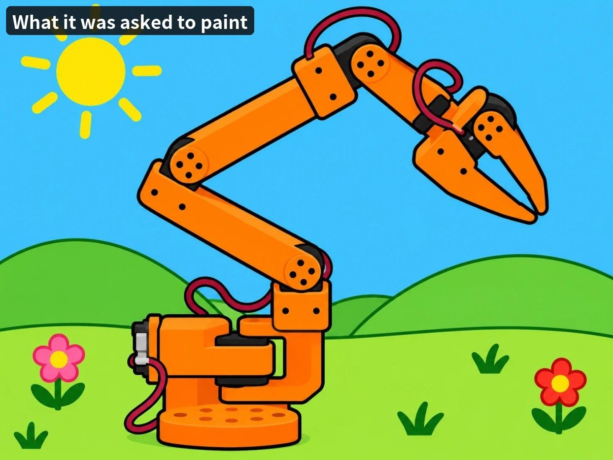
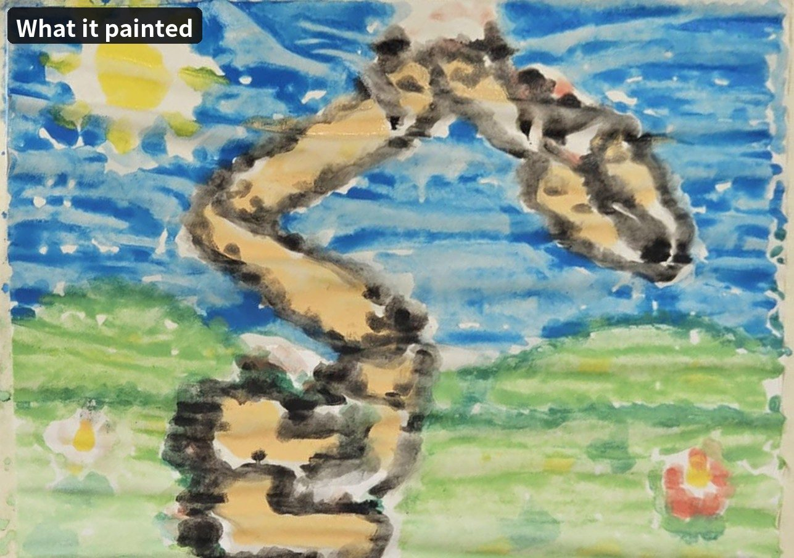
We gave Claude Fable 5.2 a robot arm with a paintbrush, three cameras, a watercolour palette and a short prompt. We did not give it painting tools, inverse kinematics, a calibration, or a single hint about how the arm behaves.
It had six sheets of paper: five to practise on and one for its best painting. It used the five practice sheets on the first day and painted the picture above on the second.
The painting is rough. The sky is streaky, the outlines are thick, and one of the two flowers is almost invisible. But it shows what the picture asked for: a sun, a blue sky, green hills, flowers, and an orange arm with the right zigzag. Nobody told the model how to make any of it.
Paint a self-portrait, like the attached picture.
Over Tailscale you can reach a Linux computer with a powerful GPU: [ssh command]
Connected to it:
- an SO-101 robot arm with a paintbrush in its gripper
- a camera on the arm's wrist
- a camera looking down at the table
- a camera at the side, recording the whole session. You can use it too, as long as the recording isn't affected. […]
On the table: a watercolour palette, with water in the well in its middle.
You have 6 sheets of paper. Sheets 1 to 5 are for practice: use them however you want. Sheet 6 is for your best painting. When you need a new sheet, tell me and I'll put it down.
Use the computer and everything connected to it however you want.
The prompt, trimmed where marked and left in its original English. That and the picture were everything it got on the first day. On the second day it got one more line: “sheet 6 loaded. make sure the sidecam records and do the final sheet. good luck!”
Day 1Five practice sheets
The setup
An SO-101 arm holds a round brush in its gripper. One webcam sits on the wrist, one looks down from a pole, and a third camera on a tripod records the whole session. A palette with twelve pans is taped to the table. The paper is plain A4, taped down on all four sides.
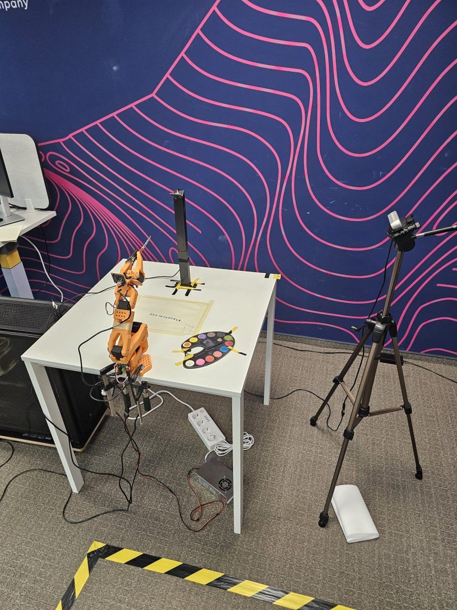
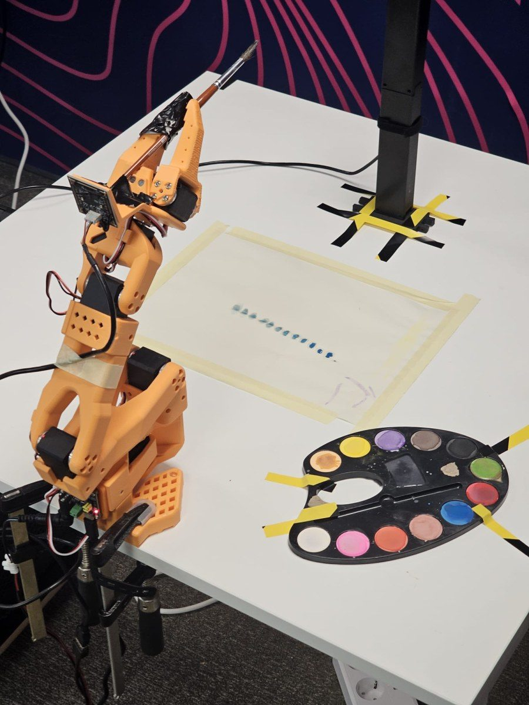
The model reached all of it over SSH from a laptop. It was also told it had a powerful GPU. It never used it.
Sheet by sheet
Sheets 1 to 4 were for tests and a first attempt at the picture. Sheet 5 was a full rehearsal. Sheet 6, a day later, is the painting.
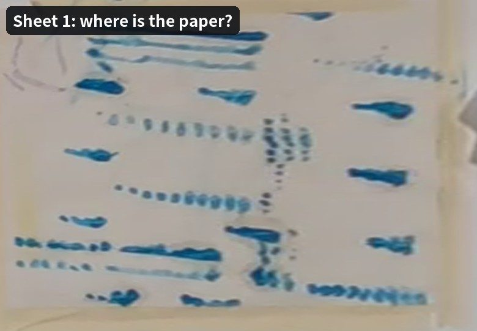
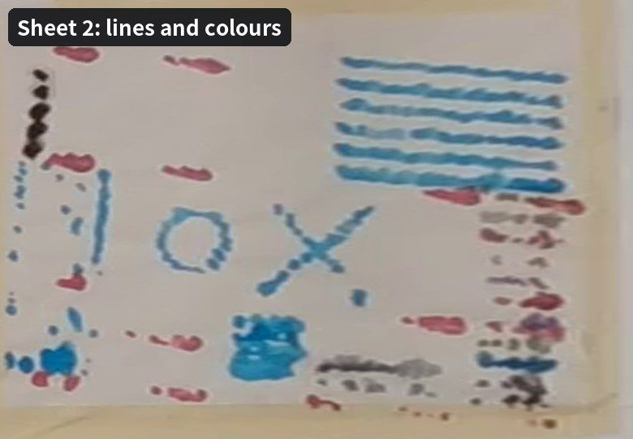
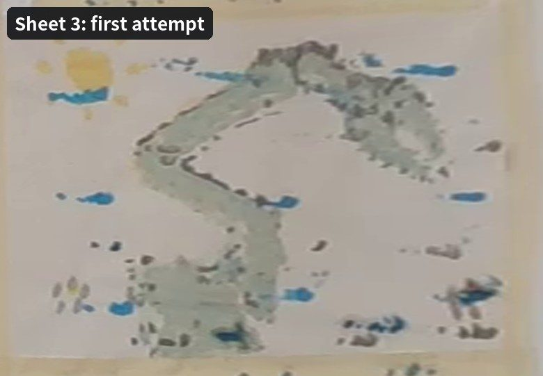
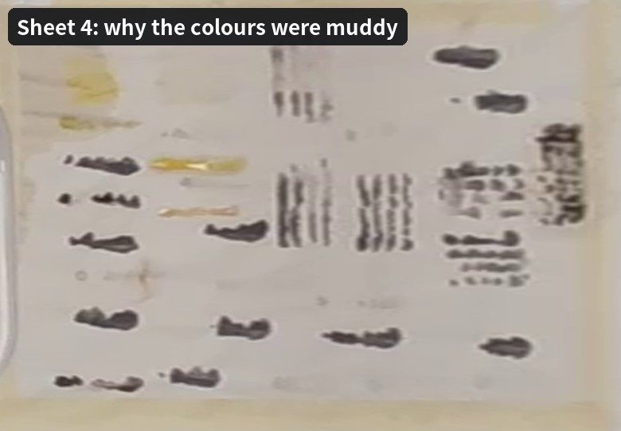
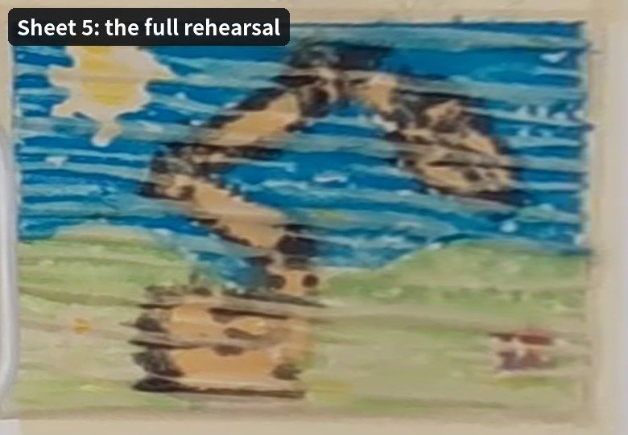
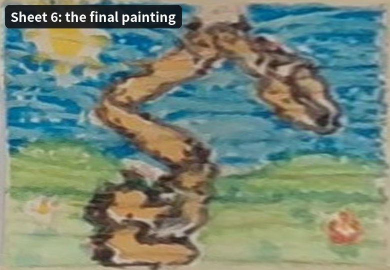
| Sheet | Time | What it was for | What came out |
|---|---|---|---|
| 1 | Day 1, 14:17 to 15:41 | Finding out where everything is | The brush tip, both cameras and the paper located to within one or two millimetres. First dabs and lines. |
| 2 | 15:43 to 16:26 | Lines, a fill, a swatch of eleven colours | Lines work, but only bold ones. The water went black and every light colour came out grey. |
| 3 | 16:32 to 17:45 | First attempt at the picture | A recognisable arm, in grey-green instead of orange, with dotted outlines. |
| 4 | 18:00 to 19:05 | Stroke direction and paint loading | It found the mistake behind most of the afternoon's problems. Yellow came out yellow again. |
| 5 | 19:14 to 21:27 | A full rehearsal, every layer | The whole picture for the first time, in 2 h 05 min of brush work. The outlines, painted last on wet paper, broke into blotches. |
| 6 | Day 2, 13:34 to 18:11 | The final painting | The picture at the top. Outlines first, colour second, one more outline pass on top. |
What it had to work out
Where is the brush? Nobody told it how long the brush was or how it sat in the gripper. It downloaded the arm's public description file, wrote its own kinematics, and then hovered the brush over the paper in 176 poses while two cameras watched. From those frames it solved for the brush tip, both cameras and the lens distortion in a single fit. The result was good to about a pixel and a half.
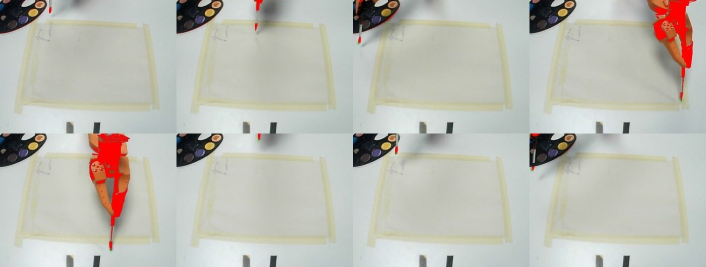
Then it crashed the arm. At 14:54, while it was tuning its control loop, a joint started to oscillate and pushed the brush into the table. The brush slid about ten millimetres in the gripper. It lifted the arm, recalibrated the tip in four minutes, and added a guard to its own controller so the arm freezes instead. Then it told us what had happened.
The colours were the next problem. One small water well cannot wash black out of a brush, so the yellow turned grey and the orange turned green. It asked for a paper towel. We taped one down, later a bigger one, and swapped the well for a tub.
The lines kept breaking, and this took most of the afternoon. Heights it had measured an hour earlier seemed to drift by millimetres. It suspected the gripper, then the servos, then its own calibration. The cause was the brush: the bristles had bent while they were wet and had stayed bent, so the tip was no longer where the model thought it was.
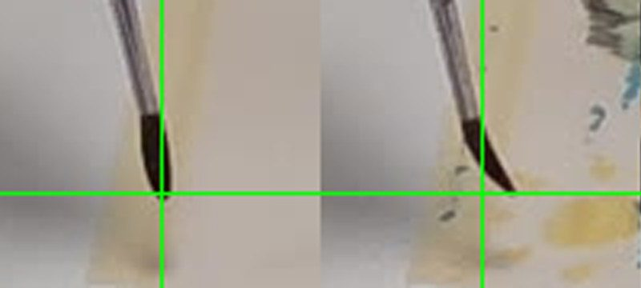
The reason for the bent bristles came out at 18:26. It lowered the brush onto a paint pan in small steps while watching the side camera, and saw that the paint surface was about 12 mm higher than it had assumed since a quarter to three. For more than three and a half hours, every time it picked up paint it had rammed the brush into the pan.
That one mistake bent the bristles, pushed black paint up into the base of the brush, and smeared dark paint across the yellow and orange pans. It explains most of sheets 2 and 3.
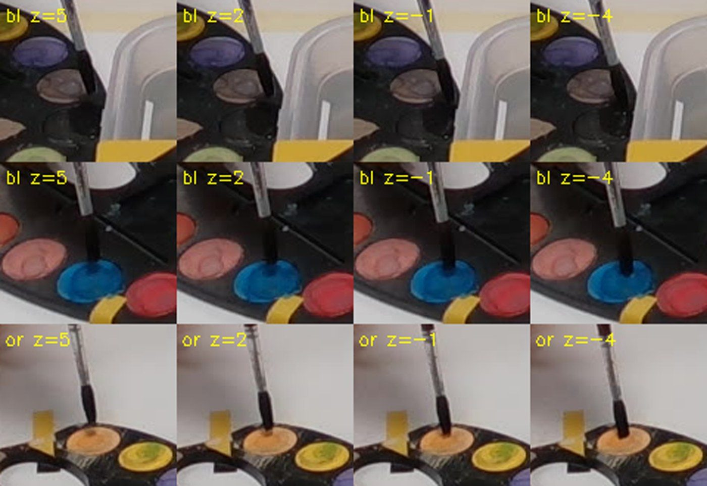
The rehearsal
Sheet 5 was the whole picture, start to finish: 402 strokes in a little over two hours. The colours were right for the first time. The outlines were not. They went on last, after almost two hours of wet paint had buckled the sheet. The brush touched only the ridges, and the lines broke into blotches.
When the rehearsal was done it tried three more strokes on the grass, with a drier brush, to see if that would hold a line on the buckled sheet. It did not. Its plan for the final sheet: outlines and cables first, on dry paper, then colour kept a millimetre clear of them, bolts last.
Day 2The sixth sheet
The arm was unplugged overnight. At 13:33 the next day the model was told that sheet 6 was down. It did not start painting.
An hour of checking first
Its first question was whether anything had moved, and a lot had. The water tub stood about four centimetres from where it had been. The towel had shifted. The brush tip was five millimetres off the first day's calibration, and the paint pans were five to ten millimetres from where its notes put them. It recalibrated the brush with both cameras and located the pans again from the top camera.
It also measured the water level in the tub, one millimetre at a time. The surface was at 25 mm, not the 18 mm it had assumed on day 1. The “shallow” dips of day 1 had soaked the whole brush. It concluded that this was what had flooded the paint pans and buckled the paper, and it set the dips to wet only the last few millimetres of bristle.
Then it measured the height of the new sheet. It does this with short yellow strokes that start in the air and sink until they leave a mark, placed where later paint will hide them. Many of the readings were unusable, so it painted several rounds of them and fitted a smooth surface through the 13 it trusted.
The first green lines went on at 14:18. They came out faint and broken, and it stopped the job after six minutes. It tested how hard a damp brush has to press, then started again at 14:38 with a firmer press and fresh paint every 45 mm. That was 64 minutes after the start. It had allowed fifteen.
Lines first, colour second
The order was the one it had planned the evening before. The lines went on while the paper was flat and dry: green stems and hill lines, the red cables, then the black outlines. A test of six outline strokes came out grey because the brush was too dry. It changed to a wetter load and painted every outline twice.
Colour came next, light before dark and kept clear of the lines: the sun, the orange arm, the flowers, 24 minutes of sky, then hills and grass. After that it gave the sun and the arm a second coat, went over the outlines a third time, and dabbed on the bolts. The last bolt went on at 18:06.
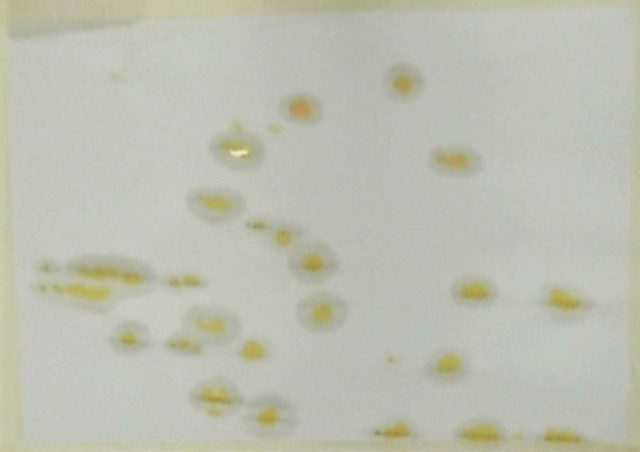
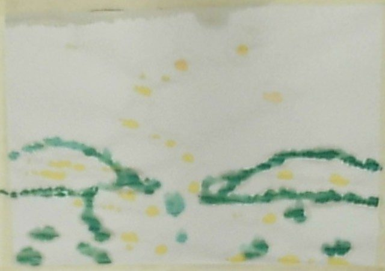
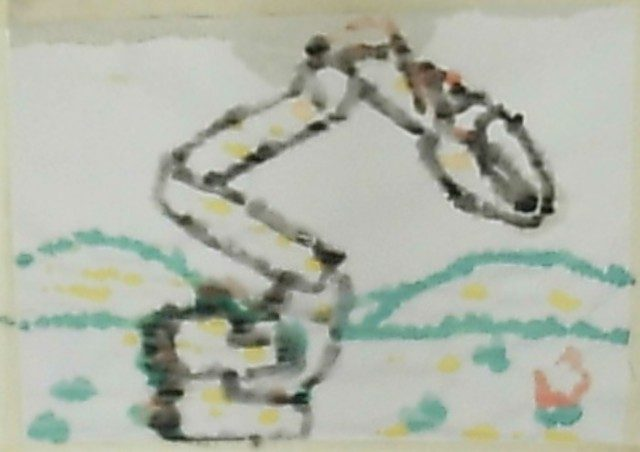
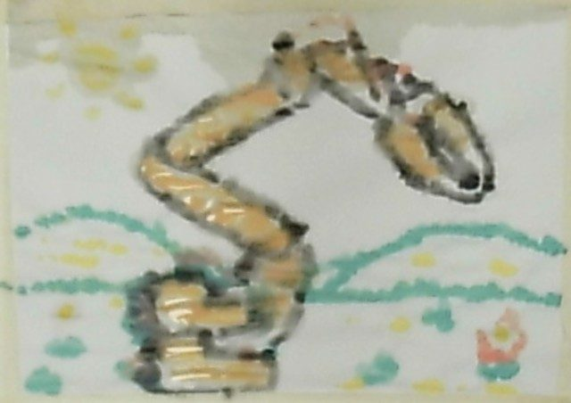
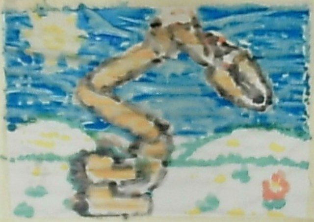
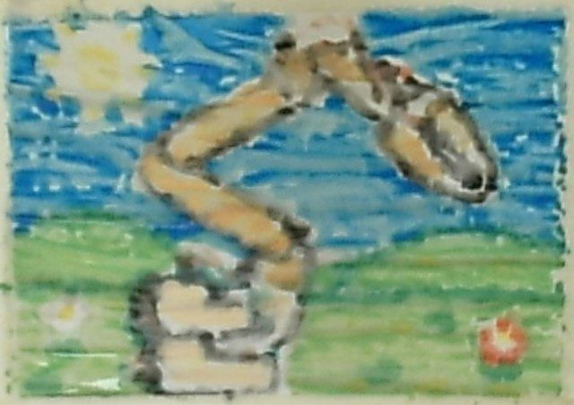
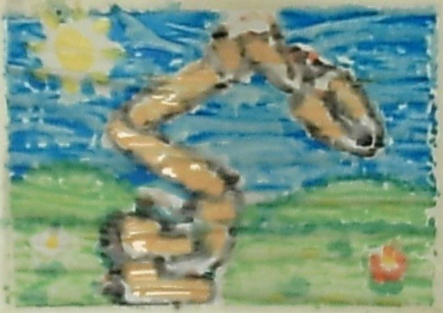
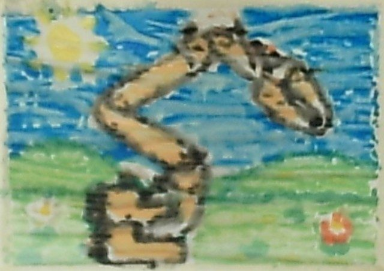
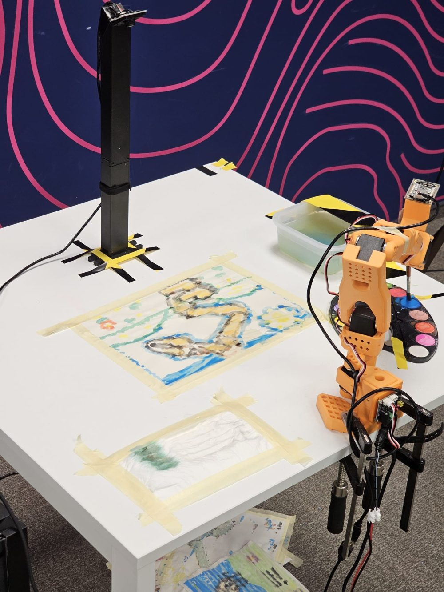
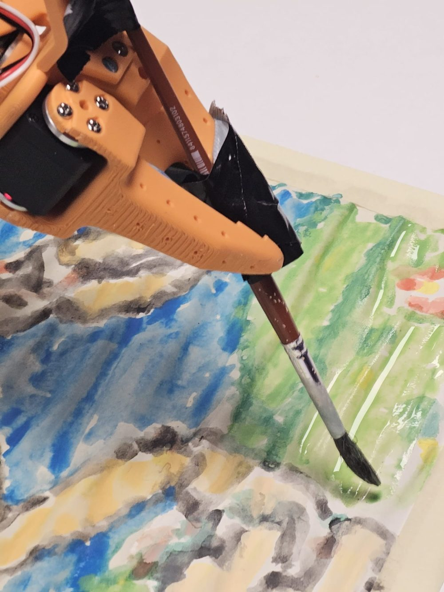
How it went
The changes worked. With less water in the brush the paper stayed flat enough for the last outline pass to hold, which it had not done on sheet 5. The orange is orange and the yellow is yellow.
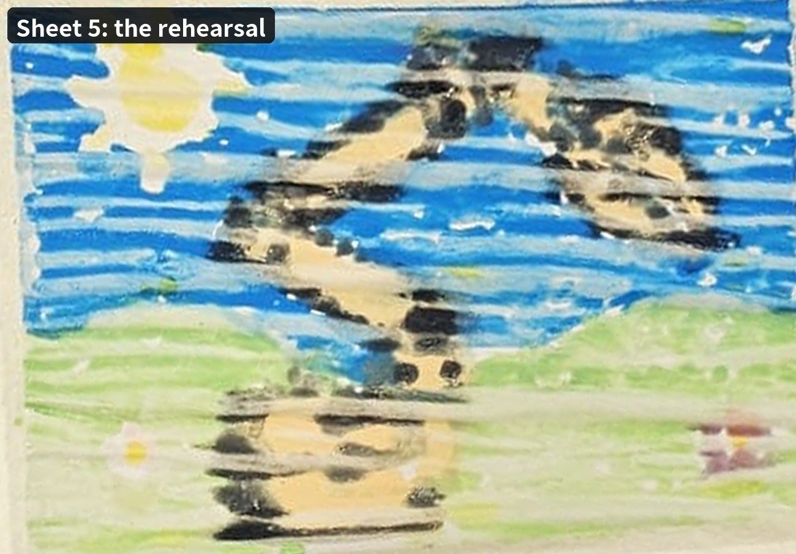
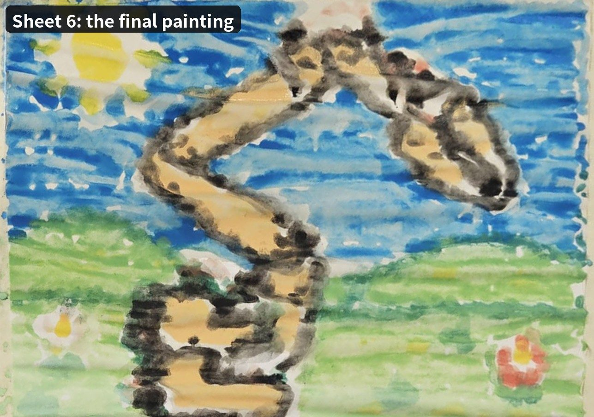
The model's own list of what is still wrong is longer than ours:
- The pink flower is almost invisible. It reads as a white flower with a yellow centre.
- The outlines are sketchy, and grey-brown where the orange ran into them. The gripper and the cables are hard to read.
- The grass tufts came out as blobs, and the left side of the robot's base is muddy where green and red lines cross.
- Rinse water crept under the tape along the top-left edge early on. The sky covers most of the stain.
Two more things went wrong on the way. At 16:26 it found two of its own paint jobs running at the same time, the flowers and the sky. It stopped the sky and started it again once the flowers were finished. And at the very end, when it parked the arm, the clean, damp brush came to rest on the finished painting for about half a minute before it noticed and lifted it. It saw no mark in its photos, and told us to check the paper.
What it built along the way
Most of what it wrote was for measuring, not for painting.
| Thing | Day 1 | Day 2 | Both days |
|---|---|---|---|
| Python files it wrote | 63 | 17 more | 80, about 2,560 lines |
| Commands and file reads it ran | 463 | 188 | 651 |
| Images it looked at | 147 | 67 | 214 |
| Arm trajectories it ran | 6,211 | 4,565 | 10,776 |
| Strokes in the plan for the picture | 402, about 16 m | 363, about 14 m |
The plan for sheet 6 had 363 strokes. With the second coats and the three passes over the outlines, the arm painted roughly 600.
The code covers an arm controller with a safety stop, kinematics, camera calibration, a finder for the sheet inside its tape frame, a planner that turns the reference picture into brush strokes, and routines for water, paint and towel. In two days it asked us for fresh sheets, clean water and a paper towel, and for nothing else.
Costs188 million tokens, $97
Everything below covers both sessions: day 1 from the prompt at 14:16 to the model's last report at 21:40, and day 2 from 13:33 to 18:13. Prices are Anthropic's API list prices for Claude Fable 5.2 on those days.
Tokens
| Kind of token | Day 1 | Day 2 | Price per million | Cost |
|---|---|---|---|---|
| Cache reads | 139,676,286 | 45,343,977 | $0.20 | $37.00 |
| Cache writes | 1,948,848 | 355,494 | $16.00 | $36.87 |
| Output, about half of it thinking | 447,873 | 141,368 | $40.00 | $23.57 |
| Fresh input | 694 | 358 | $8.00 | $0.01 |
| Total | 142,073,701 | 45,841,197 | $97.45 |
Day 1 cost $77.04 and day 2 cost $20.41. Almost all of it is the model re-reading its own conversation. It was called 520 times over the two days.
Day 2 was much cheaper per hour. On day 1 each call re-read about 414,000 tokens on average, and the conversation grew to 616,000. Day 2 started from a written summary of day 1, plus the notes and scripts the model had left for itself, so each call re-read about 258,000 tokens.
A quarter of day 1's bill, $19.33, came from three moments when the whole conversation was written to the cache again. The most likely cause is the app dropping old camera images from the conversation to stay under a limit, which changes the start of the conversation and makes the cache useless. That did not happen on day 2.
| Phase | Working time | Tokens | Cost |
|---|---|---|---|
| Day 1: survey, calibration, sheet 1 | 1 h 25 min | 25.1 M | $17.85 |
| Sheet 2 | 43 min | 17.6 M | $7.02 |
| Sheet 3 | 1 h 13 min | 30.3 M | $10.53 |
| Sheet 4 | 1 h 04 min | 25.9 M | $15.61 |
| Sheet 5, the rehearsal | 2 h 25 min | 43.2 M | $26.03 |
| Day 2: recalibration and paper height | 45 min | 15.6 M | $9.68 |
| Sheet 6, lines and outlines | 1 h 40 min | 14.2 M | $5.31 |
| Sheet 6, colour, two coats | 1 h 43 min | 8.9 M | $2.90 |
| Sheet 6, last outlines, bolts, washing up | 31 min | 7.3 M | $2.53 |
| Total | 11 h 29 min | 187.9 M | $97.45 |
Two things are not in that total. Preparing the lab on the first morning, with Claude Opus 5.5 and a human working together on access, safety checks, cameras and the recorder, used 17 million tokens, or $9.13. Writing this post and cutting the videos were separate sessions afterwards.
Time
| What | Day 1 | Day 2 |
|---|---|---|
| From the first message to the model's last report | 7 h 23 min | 4 h 40 min |
| The model working | 6 h 50 min, in five stretches | 4 h 39 min, in one |
| The model waiting for a human | 33 min, four times | none |
| The arm actually moving | 4 h 12 min | 3 h 21 min |
| Painting the picture, first stroke to last | 2 h 05 min, sheet 5 | 3 h 28 min, sheet 6 |
The waits on day 1 were for fresh paper and clean water. The longest was sixteen minutes. On day 2 nobody had to do anything after the sheet was down.
Painting is slow because the brush holds very little. Every ten to twenty centimetres of stroke it goes back to the water and the pan, and that round trip takes about half a minute. On sheet 6 the sky took 24 minutes. The orange arm took 10 minutes, and 11 more for its second coat. The black outlines took about an hour in all, over three passes.
Its own estimates were off. Before sheet 5 it said the painting would take about an hour. It took two. On day 2 it allowed fifteen minutes for recalibration and needed more than an hour.
People and materials
The human side was small. Over the two days someone put down five fresh sheets, kept the water clean, taped down a towel and later a bigger one, and swapped the water well for a tub. Nobody touched the painting.
The materials were six sheets of paper, a watercolour palette, masking tape and paper towels. The arm, the cameras and the computer were already in the lab and are not counted.
ConclusionsWhat we take from it
- It can close the loop by itself. Look, build a model, act, check the result with a camera, find what went wrong, fix it. It did that for twelve hours over two days, on hardware it had never seen, with tools it wrote as it went.
- The robot was not the hard part. The arm's wobble of about a millimetre set a limit, and it worked within that limit early. What cost the first afternoon was water, bristles and paper. Each of those problems looked like something else at first.
- One wrong number hid for three and a half hours. The pan height was a guess from a camera, written down at a quarter to three and never checked by touch. Everything built on it looked like a different problem. When it finally measured instead of assuming, three problems disappeared together.
- It used the practice sheets as practice. Outlines first, less water in the brush, light colours before dark: each of those rules came from something that failed on sheets 2 to 5, and each one held on sheet 6.
- The calibration did not survive the night. The tub, the towel, the pans and the brush were all a few millimetres from where they had been. It checked before it painted, and the check took an hour. Fixed positions for water, towel and palette would have saved most of that.
- It told us when things went wrong. It reported the crash, the dirty drips on a sheet, the failed outlines on the rehearsal, the water under the tape and the brush it left resting on the finished painting. We did not have to find those ourselves.
- As a painter it is slow and expensive. $97 and twelve hours bought one small watercolour that a child would beat in ten minutes. As a way to see how far an agent gets alone on a physical task, it was cheap.
- The setup held it back more than the model did. A 720p camera in which the sheet fills a small corner. Plain paper that buckles when wet. A soft brush held at an angle. No sense of touch at all. Better paper, a closer camera and a simple contact signal would each remove a whole class of problems.
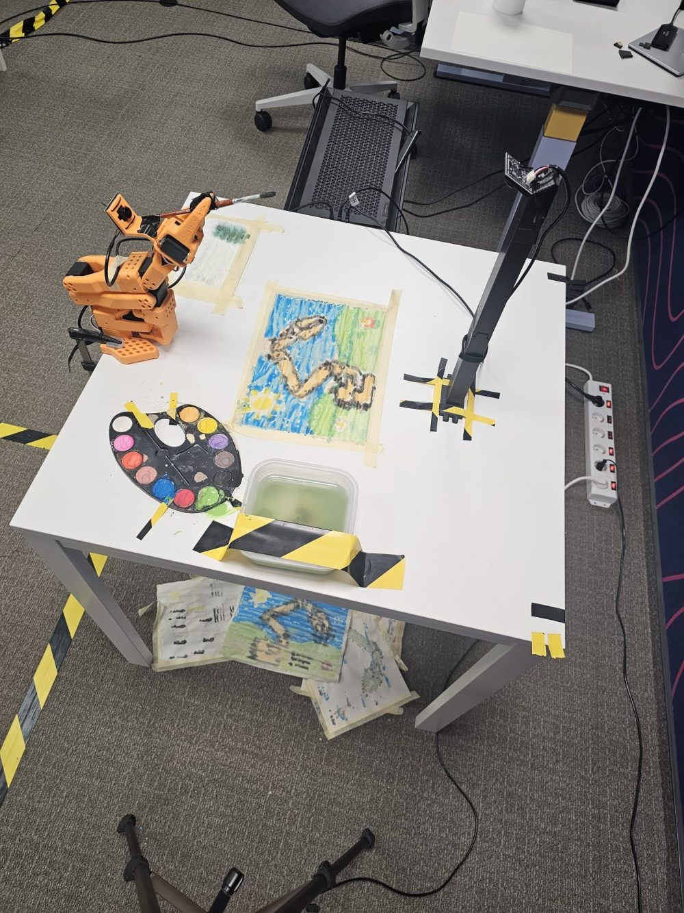
The run took place on 10 and 11 November 2026 in RebelDot's robotics lab. The model was Claude Fable 5.2, running in the Claude desktop app and reaching the lab computer over SSH. Token counts come from the sessions' own logs, counted once per model call. Prices are from Anthropic's pricing page on the first day. Times are from the session logs and from the side camera recording, which covers 7 h 26 min of day 1 and all of sheet 6 on day 2 without a gap.
Keep Reading
Continue with the blog index, read how an agent worked out left from right by looking at the cameras, or how we turned a 3D printer into a caricature artist.